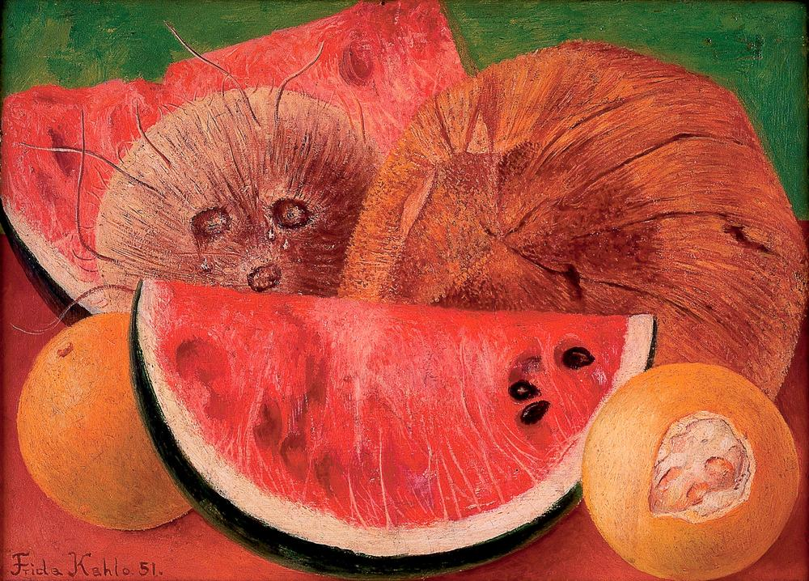
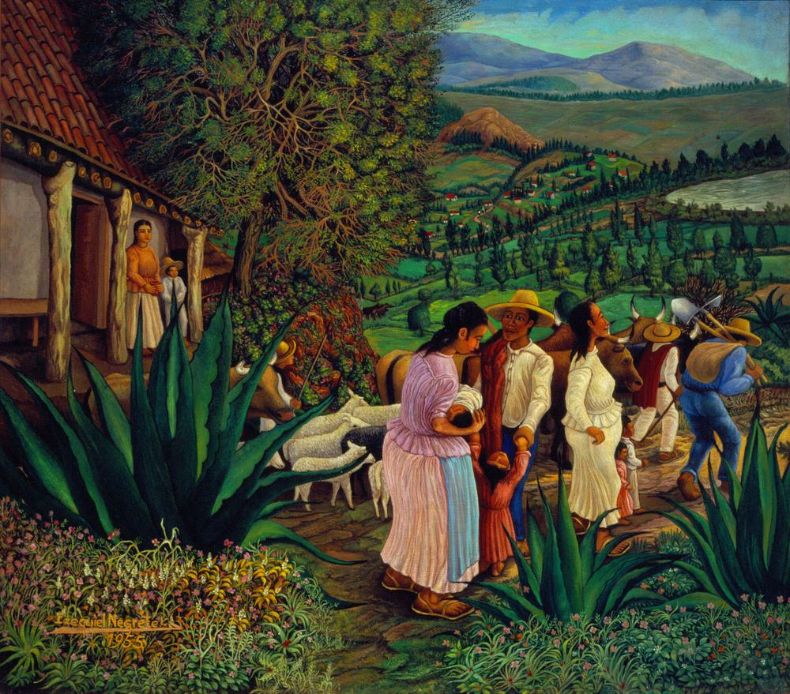
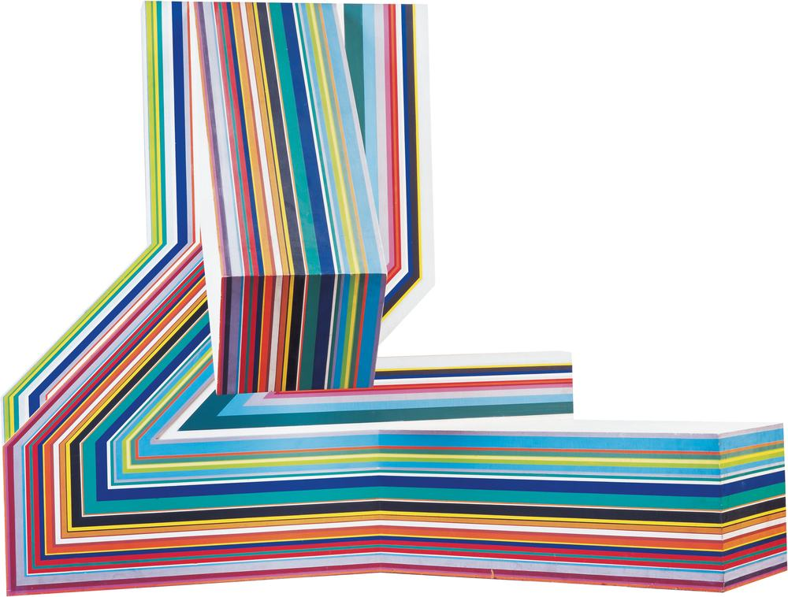
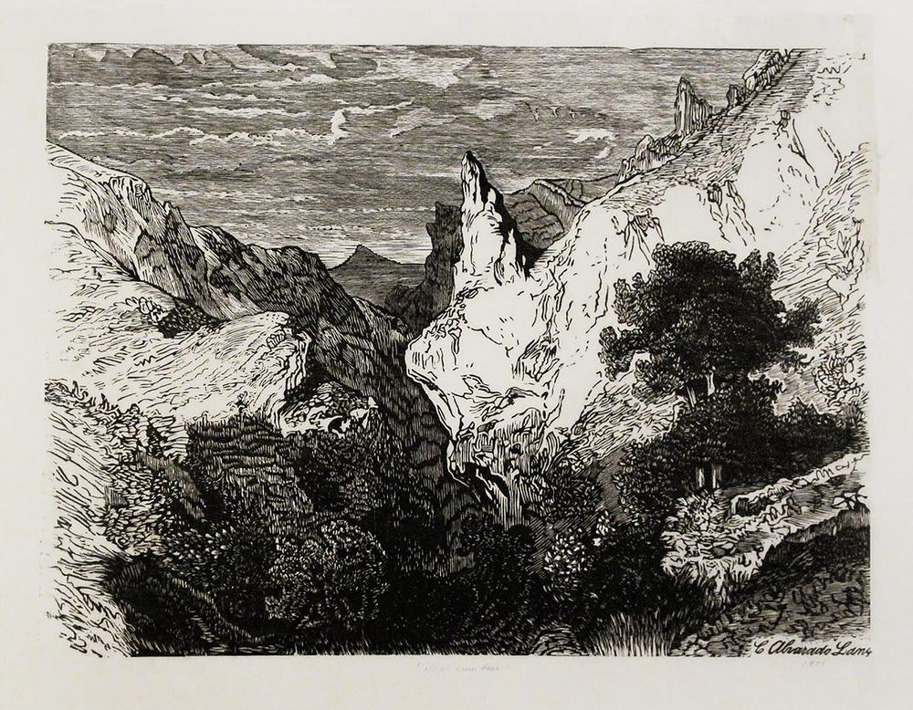
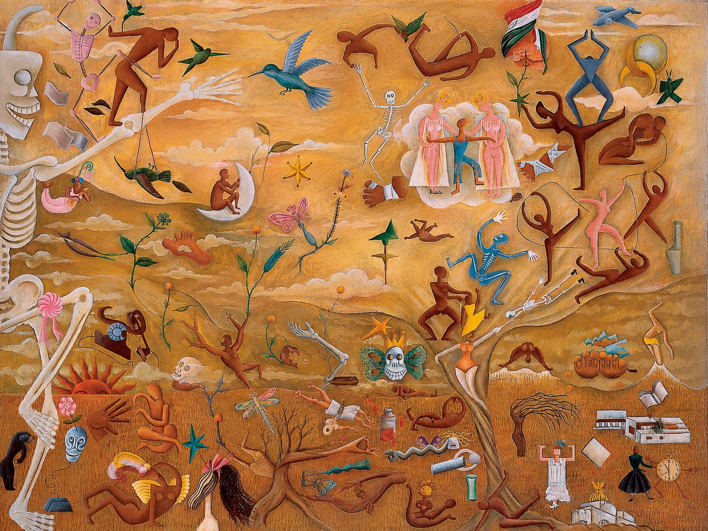
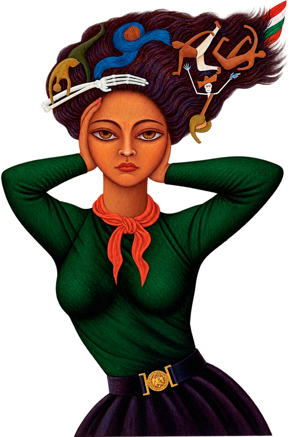
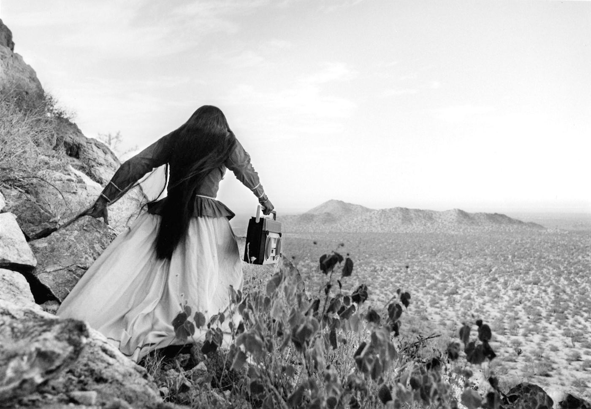

Selección curada
Obras destacadas
Ver galería completa →Pintura

Pintura

Escultura

Fotografía
Grabado



Un recorrido de 18 obras que cruzan cuatro siglos y seis museos de la red, con texto interpretativo obra por obra. Una sala sin muros.
Ver el recorrido →




Cruza autor, técnica, fecha, inventario y museo con operadores booleanos. Exporta en CSV o PDF.
Cita cada obra en formato APA y Chicago con un clic, con permalink permanente.
Metadatos abiertos bajo estándar CENCROPAM e imágenes de dominio público en alta resolución.